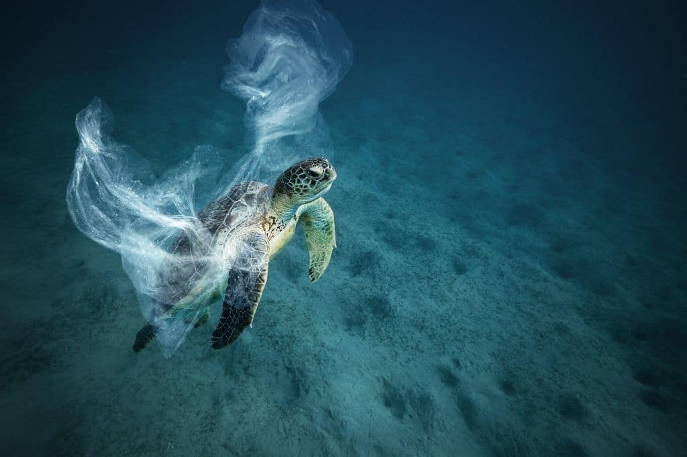
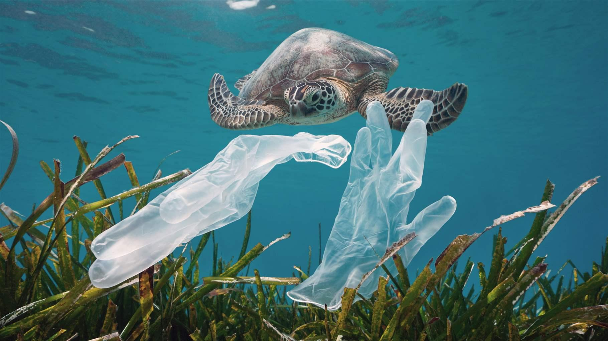
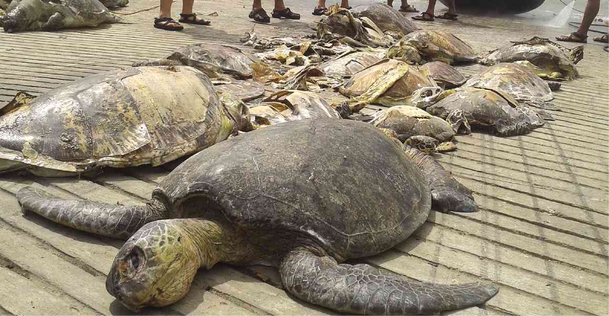
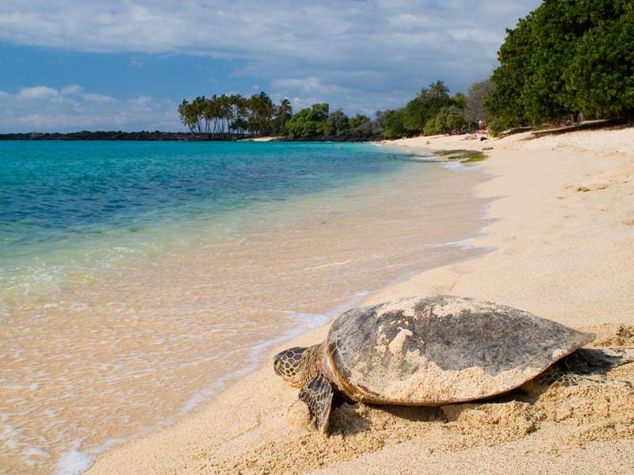
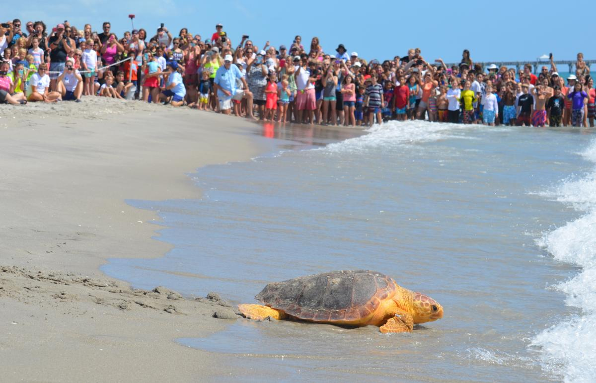

Sea turtles journey between land and sea and swim thousands of ocean miles during their long lifetimes. They wait decades until they can reproduce, returning to the same beaches where they were born to lay their eggs.
Females can lay hundreds of eggs in one nesting season, yet few will yield hatchlings that survive their first year of life. Beyond these significant natural challenges, sea turtles face multiple threats caused by humans, such as bycatch in commercial fishing gear, illegal tread, consumption, and climate changes. Learn More

Lots of sea turtles are at risk of extinction due to their softer shell being by-catch in fishermen’s nets, and due to poaching of their eggs. They are considered “critically endangered” and Sri Lanka hasn’t seen a Leatherback turtle on its shores in recent years.

One of the biggest problems in Sri Lanka is human poachers, who mishandle the eggs to sell to turtle sanctuaries or to locals as a source of food or medicine.

Climate change has an impact on turtle nesting sites. global warming is estimated have serious effects on wildlife over the next few decades and sea turtles have already been affected. As the overall temperature of the earth rises, it alters sand temperatures which then affects the hatchlings.

Eight million tons of plastic make their way to the ocean every year.Sea turtles can mistake floating plastic materials for jellyfish and can choke on them when they try to eat them. Trash on beaches can trap hatchlings and prevent them from reaching the Ocean. Oil spills alslo poison sea turtles of all ages.

Owning to the popularity of numerous sea turtle species, people often travel to areas where the turtles nest, live to observe and photograph them. This has resulted in numerous deaths of the turtle through boat collisions, tourists attempting to catch or steal individuals, and other incidents.
Educating the local community about the importance of sea turtles and the environment.
Create a tour permit system whereby former poachers and sactuary staff take tourists onto nesting beaches in a safe and ethical way.
Provide a new income to local poachers to gradually decrease their presence. Also working with fisheries to switch to more turtle-friendly fishing hooks.
Government should strengthen legislation on, and provide funding for sea turtle protection.
Learning about how sea turtles are being affected by climate changes and help determine the best ways to reduce their vulnerability to changing environmental conditions.